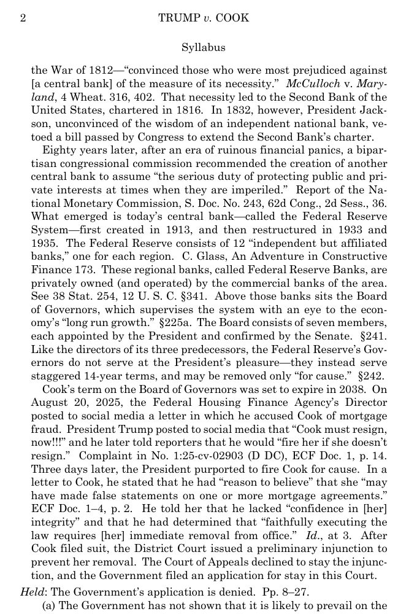

The Supreme Court Lets Lisa Cook Keep Her Fed Seat Without Deciding Whether Trump Can Fire Her
The 5-4 order came hours after a 6-3 majority overruled Humphrey's Executor for the Federal Trade Commission and carved out the Federal Reserve by name, on historical grounds that two independent legal scholars, arguing from opposite sides of the underlying debate, agree the Court has never actually defended.
Why Lisa Cook keeps her seat, for now
On June 29, 2026, the Supreme Court refused to let President Trump remove Lisa Cook from the Federal Reserve's Board of Governors while her case proceeds. The vote was 5-4. It was the first time in the Federal Reserve's 111-year history that a President had even attempted to fire a sitting Governor, and the order leaves that attempt paused.1
- Stage
- Stay denied, 5-4, June 29, 2026. Cook remains in office; the case returns to the district court to litigate the merits.
- Question
- What "cause" requires under the Federal Reserve Act, and whether the Fed's removal protection survives inside or falls outside Humphrey's Executor's surviving core.
- Stakes
- Whether a President may remove a sitting Fed Governor mid-term, and what, if anything, keeps the central bank's structure different from every other independent agency.
The majority rested its order on procedure, not on power. Cook was entitled to "some explanation of the evidence at issue, some avenue for a response, and a deadline by which a response would be due" before her removal took effect. Because the President gave her none of that, the Court held, her firing was "erroneous and void" from the moment it issued.1 On the separate question of what "cause" itself requires, the Court rejected both parties' readings. The government's, that almost any complaint about a Governor would do, failed. So did Cook's, that only conduct committed in office could count. In place of either, the Court gave only an instruction: "any definition of 'cause' in this context must reflect the Federal Reserve's unique historical status and role," which "counsels a substantial threshold."1 Justice Kavanaugh, concurring, said plainly what the ruling left undone: it "does not decide whether the President may lawfully remove Governor Cook for cause."1
The stay denial did not arrive alone. The same morning, a 6-3 majority in Trump v. Slaughter overruled Humphrey's Executor v. United States outright for the Federal Trade Commission: "If anything more is left of Humphrey's, we overrule it."2 In the same breath, the Court carved the Federal Reserve out of that holding by name, citing "the Federal Reserve, to the extent that it follows in the tradition of the First and Second Banks of the United States" as an entity Humphrey's collapse does not reach.2 That language traces to a footnote the Court had used a year earlier to stay the reinstatement of two other agencies' board members, describing the Fed as "a uniquely structured, quasi-private entity that follows in the distinct historical tradition of the First and Second Banks of the United States."3 The government itself never asked the Court to go further in Cook's case. At argument, its own counsel "acknowledge[d]" that description of the Fed and conceded the administration had "not challenged... the removal restriction in this case."1

What actually happened, in order, is easy to lose inside the doctrine it reopened:
-
Aug. 25, 2025
The removal letter4
Trump tells Cook he lacks "confidence in [her] integrity" and cites conflicting owner-occupancy statements on a $203,000 Michigan mortgage from June 2021 and a $540,000 Georgia mortgage two weeks later, both attested as her "primary residence" for the year that followed.
-
Sept. 9, 2025
A preliminary injunction5
The district court blocks the removal, holding that "for cause" does not reach conduct that predated Cook's time in office and that she was owed a pre-deprivation hearing.
-
Sept. 15, 2025
The D.C. Circuit declines to stay it1
A divided panel leaves the injunction in place; Judge Katsas dissents, arguing Cook has no property interest in her seat.
-
Jan. 21, 2026
Oral argument1
The government tells the Justices it is not contesting the constitutionality of the for-cause restriction itself, only its application here.
-
June 29, 2026
The stay is denied, 5-412
Cook keeps her seat while the case returns to the district court. Hours earlier, Slaughter overruled Humphrey's Executor for the FTC.
As one law firm's client alert, written by lawyers with no role in the case, summarized it the same day: "The decision addresses only the preliminary injunction standard. The underlying question of whether Cook's actual removal was legally justified remains unresolved pending conclusion of full litigation."6 Two questions remain genuinely open and genuinely contested. One: what showing satisfies "cause" under the statute. Two: whether the Federal Reserve's structure keeps it inside the sliver of Humphrey's Executor that survived Slaughter, or places it outside that sliver like every other independent commission. Both sides argue from the same body of law.
Unitary-executive originalists and the government's own litigating theory
Article II vests the whole of the executive power in one President, so any officer who exercises it, a Fed Governor included, is removable once cause exists, and the Fed claims no exception.
Humphrey's Executor had shielded only officials whose duties were "quasi-legislative" and "quasi-judicial," who could not "in any proper sense be characterized as an arm or an eye of the executive."7 Slaughter held that description no longer fits any agency that enforces a congressional mandate against private parties: "it exercises executive power, no ifs, ands, or quasis about it."2 The government's own stay motion applied the same logic to Cook's removal directly. It described the President's "power to remove, and thus to supervise, those who wield executive power on his behalf" as "conclusive and preclusive." On that theory, "Congress cannot act on, and courts cannot examine, the President's actions" within that sphere.8 The President's own letter to Cook stated the same theory in his own words: "I have a solemn duty to ensure that the laws of the United States are faithfully executed. I have determined that faithfully executing the law requires your immediate removal from office."4
Justice Thomas, dissenting in Cook, would have decided the merits now rather than waited. Cook's office, he wrote, "was not her 'property,'" and the mortgage filings the government cited were cause enough on their own terms; "[a]ny other result would violate Article II... under which the President may remove executive officers at will."1 He read Slaughter, decided the same day, as controlling. If the President may remove his subordinates at will "so long as they exercise any executive power," a Board that fines banks and writes regulations cannot claim an exemption. He called the majority's own carve-out "a contradiction."1
Independent legal scholarship reaches a nearby conclusion from the doctrine itself rather than from the litigation. Reviewing the Fed's own enforcement record, including an $8.6 million fine the Board levied against Citigroup in 2018 "for the improper execution of residential mortgage-related documents," Aditya Bamzai and Aaron Nielson conclude that "under the Court's modern precedent... the President likely already enjoys a great deal of statutory authority to remove the Federal Reserve's leaders" whenever the Board exercises functions that "clearly require[] executive power under the court's modern precedent."9
Justice Clarence Thomas, standing here because he dissented in Cook on exactly this question, stating the categorical removal-power theory in his own name and tying it to the six-Justice Slaughter majority he joined the same day.1
The Cook majority and the Federal Reserve Act's own text
The Federal Reserve Act protects Governors from removal except for a substantial cause tied to their conduct in office, and the Fed's 111-year institutional design, not any exception a court invented for this case, is why the Constitution tolerates that limit.
The statute is the starting point. Since 1913, the Federal Reserve Act has provided that each Governor "shall hold office for a term of fourteen years... unless sooner removed for cause by the President," without defining what "cause" means.10 Writing for the Cook majority, Chief Justice Roberts read that guarantee as still binding, holding that "cause" carries "a substantial threshold" turning on "the seriousness of the alleged misconduct, and the extent of any nexus that may exist to the Governor's professional duties."1 He traced that threshold to the Fed's own lineage, writing that it "maintains the 'balance struck by the founding generation' under 'modern circumstances,'" reaching back to the First and Second Banks of the United States.1
That history did not originate in Cook's case. A year earlier, staying the reinstatement of two other agencies' board members, the Court had already set the Fed apart in a footnote of its own, calling it "a uniquely structured, quasi-private entity."3 Dissenting from that stay, Justice Kagan made the underlying structural claim explicit: "For 90 years, Humphrey's Executor... has stood as a precedent of this Court," undergirding "bipartisan administrative bodies," expressly including "the Federal Reserve Board."3 The clearest statement of the stakes, though, came from the government's own lawyer. At argument in Cook, its counsel conceded the Fed is "a quasi-private, uniquely structured entity that stands in the distinct historical tradition of the First and Second Banks," and that "we have not challenged... the removal restriction in this case."1
On this reading, the due-process holding is not a technicality layered on top of the statute; it is the same protection enforced a second way. SCOTUSblog summarized the majority's own warning in plain language: accepting the government's reading of "cause" "would in effect transform the Federal Reserve's for-cause protection into at-will employment."11 An office Congress meant to insulate from at-will removal cannot be emptied out by removing its holder without notice either.
Chief Justice John Roberts, standing here because he wrote the controlling Cook opinion and set out, in the Court's own name, both the substantial-threshold reading of "cause" and the historical basis for treating the Fed's structure as distinct.1
Inside or outside Humphrey's Executor's surviving core
Both sides agree the Federal Reserve wields real power. What divides them is where its structure sits: inside the sliver of Humphrey's Executor that survived Slaughter, or outside it, like the FTC. That is an unsettled question of law, an undecided fact rather than a clash of values, and no court has ruled on it, because the government never asked the Cook courts to.1 It becomes a forecast only once litigation resumes on remand, and there is already a paper trail showing how thin the ground under either answer is.
The "distinct historical tradition" language both opinions lean on has a short pedigree. It originates in a footnote to Seila Law, answering a dissent's argument that the Consumer Financial Protection Bureau resembled older financial regulators: "even assuming financial institutions like the Second Bank and the Federal Reserve can claim a special historical status, the CFPB is in an entirely different league."12 Justice Kagan's Wilcox dissent read that sentence for exactly what it was built to do: "footnote 8 provides no support... an assumption made to humor a dissent gets turned into some kind of holding."3 Justice Sotomayor's Slaughter dissent presses the same complaint from the opposite direction, asking how a Court that just discarded "ad hoc historical exceptions" everywhere else can keep one for the Fed: "How close is close enough for a historical analogue of this kind? Does any agency that 'influence[s] monetary policy' qualify?... What happens if Congress adds new functions beyond the historical baseline?" She points to the Fed's own civil-penalty authority, up to $1 million per day, as evidence that baseline keeps growing.2 Four Justices, across two opinions a year apart, are saying the same thing about the sentence Cook and Slaughter now lean on: it was never built to carry this weight.
Independent legal scholarship, working from opposite starting points, converges on a related but distinct complaint: not that the carve-out reaches the wrong result, but that no one has yet supplied it a stable doctrinal line. Bamzai and Nielson's own reading of current precedent favors the removal camp, yet they conclude that only Congress, by stripping the Fed of regulatory functions that are "inherently executive," could put the Fed's monetary independence on secure footing going forward.9 Columbia's Lev Menand, writing from a position sympathetic to central-bank independence, reviewed the scholarly proposals for a principled Fed exception and "concludes that none are tenable," leaving the protection resting on "stare decisis," precedent kept for precedent's sake rather than for a reason a lower court could apply.13 Neither scholar is deciding who has the better constitutional argument. Both are describing the same gap: an exception the Court keeps citing and has not yet been made to defend.
One distinction is easy to lose inside that gap. The district court that first blocked Cook's removal held categorically that "for cause" "does not contemplate removing an individual purely for conduct that occurred before they began in office," meaning her mortgage filings, which predated her appointment, could never count.5 The Supreme Court did not adopt that theory. Justice Alito's dissent notes that "the majority and Justice Thomas apparently agree" the district court's categorical rule was wrong; the stay was denied on due process instead, leaving the seriousness-and-nexus standard above as the actual governing test.1 Whether Cook's 2021 mortgage filings meet that standard is a question no court has answered yet. A second distinction sits beneath the first. Thomas treats Cook's office as never having been "property" the Constitution protects; the majority instead held her removal "erroneous and void" for want of due process.1 Neither statement is the question Collins v. Yellen already settled for a different removable officer: an unconstitutional removal restriction does not make an official's actions void from the start, though it can leave the government owing "compensable harm" for what happened while the restriction stood.14 Removal validity and the downstream validity of what a removed, or wrongly retained, official does are two different questions, and only one of them was before the Court in June.
What would resolve the larger question is a merits ruling the district court has not yet issued. It would have to weigh facts no opinion so far has reached: Cook's specific conduct, and the specific authority Congress has since added to the Board. The Congressional Research Service published its own summary of where things stand a week after the decision. The Court "rejected both the government's broad reading" of cause "and Cook's narrow one," it noted, landing on the substantial-threshold test while declining to "fully demarcate the contours" of what "cause" means, since the ultimate question of removing Cook "will depend on the adjudication of those facts in the lower courts."15 Neither the district court nor the Supreme Court has yet answered that question, or the structural one behind it. Until one of them does, the strongest form of each side's case rests exactly where it stands today: an Article II claim unnarrowed since Slaughter, against a 111-year-old statute the Court says still means what it says.
Sources
- Supreme Court of the United States · Trump v. Cook, No. 25A312, slip opinion, concurrences, and dissents (June 29, 2026)
- Supreme Court of the United States · Trump v. Slaughter, No. 25-332, slip opinion and dissent (June 29, 2026)
- Supreme Court of the United States · Trump v. Wilcox, No. 24A966, per curiam stay and Kagan dissent (May 22, 2025)
- President Donald J. Trump · Letter to Governor Lisa Cook notifying her of dismissal from office (Aug. 25, 2025)
- U.S. District Court for D.D.C. · Cook v. Trump, Memorandum Opinion, No. 1:25-cv-2903 (Sept. 9, 2025)
- Marcus Weymiller & Brian Paul, Faegre Drinker · Supreme Court Decides Trump v. Cook (June 29, 2026)
- Supreme Court of the United States · Humphrey's Executor v. United States, 295 U.S. 602 (1935)
- United States · Government's Emergency Motion for Stay, No. 25-5326 (D.C. Cir., filed Sept. 11, 2025)
- Aditya Bamzai & Aaron L. Nielson, 109 Cornell L. Rev. 843 · Article II and the Federal Reserve (2024)
- Cornell Legal Information Institute · 12 U.S.C. §242, Federal Reserve Act §10 (for-cause removal provision)
- Amy Howe, SCOTUSblog · Court prevents Trump from firing Fed governor (June 29, 2026)
- Supreme Court of the United States · Seila Law LLC v. CFPB, 591 U.S. 197 (2020)
- Lev Menand, 94 Fordham L. Rev. 2089 · The Unitary Executive and the Federal Reserve (2026)
- Supreme Court of the United States · Collins v. Yellen, 594 U.S. 220 (2021)
- Congressional Research Service · Legal Sidebar LSB11449 (July 6, 2026)